Quick outline of topics on upcoming exam
- 2.1
- Sample spaces and events
- Unions, intersections, complements
- Related logical connectives (OR, AND, NOT)
- Mutually exclusive events
- Definition of probability and axioms of probability
- Probability of the union of mutually exclusive events
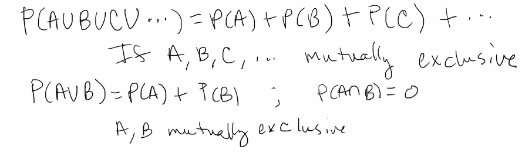 - Complementation rule
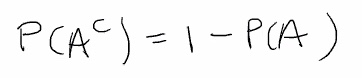 - Probability for equally likely outcomes
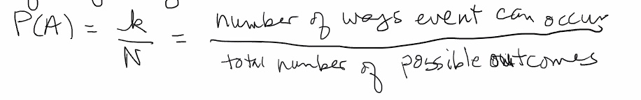 - General addition rule
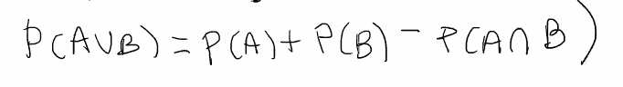 - Useful info
- 2.2
- Counting methods
- Fundamental principle of counting
- Permutations
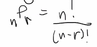- Repetition not allowed
- Order matters
- Ordered selections
- Combinations
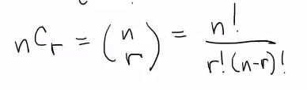- Repetitions not allowed
- Order does not matter
- 2.3
- Conditional probability
- Meaning of
P(A∣B)=P(A∩B)P(B)
- Meaning of
- Independence
P(A∣B)=P(A) - If
A andB are independent, so are 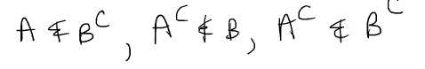
- Multiplication rule
P(A∩B)=P(A)⋅P(B∣A)
- Multiplication rule when events are independent
P(A∩B)=P(A)⋅P(B)
- Law of total probability and Bayes' rule
- Word problems
- Conditional probability
- 2.4
- Random variables
- Discrete vs continuous
- Possible values of a random variable
- Discrete
- Probability mass function (pmf)
- Cumulative distribution function (cdf)
- Mean, variance, standard deviation
- Finding, using, interpreting, computing these ideas
- Continuous
- Probability density function (pdf)
- Cumulative distribution function (cdf)
- Mean, variance, standard deviation
- Finding, using, interpreting, computing these ideas
- Median and percentiles
2.5 cont.
Stat50 2.5 Means and Variances of Linear Combos of RVs.pdf
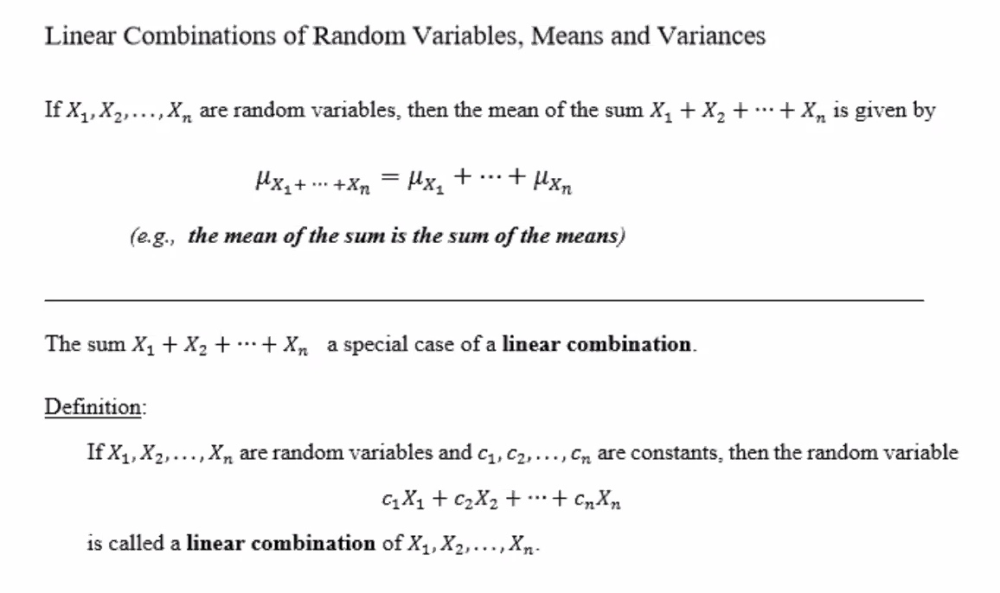

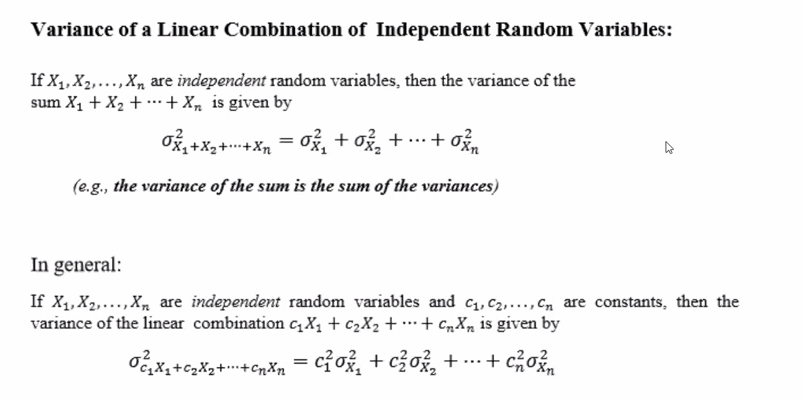
The variance of the sum is the sum of the variances; WHEN the
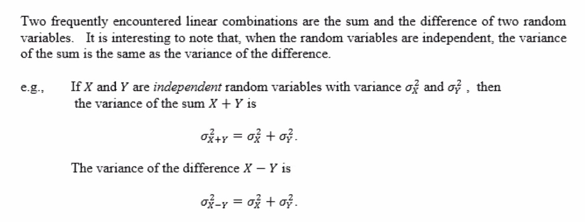
e.g.
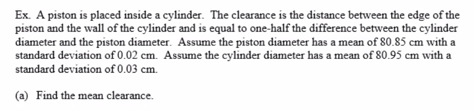
The clearance is the the distance from the edge of the piston and the wall of the cylinder, and is equal to one half the differente between the cylinder diameter and the piston diamter.
Lets define our variables:
To find the mean clearance:
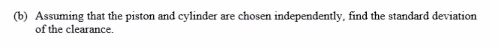
Must first find the variance!
Variance of the clearance: